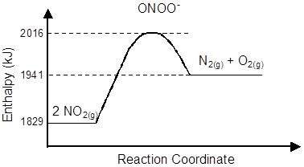

The
nitrogen cycle is an important
nutrient cycle that occurs in ecosystems. During the nitrogen cycle, the
nitrogen that is in the atmosphere is converted to a form that can be used by
plants.
Question 5
The
nitrogen cycle is an important
nutrient cycle that occurs in ecosystems. During the nitrogen cycle, the
nitrogen that is in the atmosphere is converted to a form that can be used by
plants.
During
the nitrogen cycle, nitrogen dioxide, NO2, is formed from
atmospheric nitrogen gas, N2, and oxygen gas, O2. The
balanced chemical equation for the formation of nitrogen dioxide is shown
below:
N2(g) + 2 O2(g) ® 2 NO2(g)
The reverse reaction also occurs during the nitrogen cycle. Nitrogen dioxide is decomposed into nitrogen gas and oxygen gas. The energy diagram below illustrates the enthalpy changes during the decomposition of nitrogen dioxide.

Answer the questions below for the formation of nitrogen dioxide.
|
a) What is the value of the activation
energy for the formation of nitrogen dioxide? |
|
b) What is the heat of formation, DH, for 1 mole of nitrogen dioxide? |
|
c) Is the formation of nitrogen dioxide
endothermic or exothermic? |
|
d) Certain acids can catalyze the
formation of nitrogen dioxide. Indicate which value or values given in the graph above would be
affected by an acid catalyst and describe how the value(s) would be affected. |